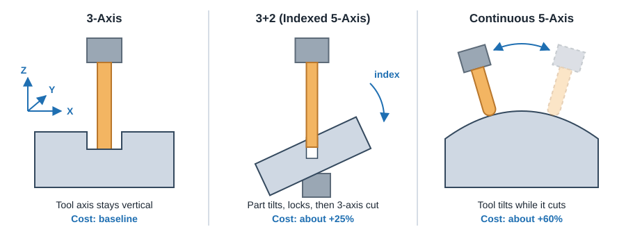
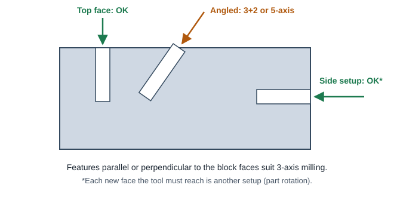
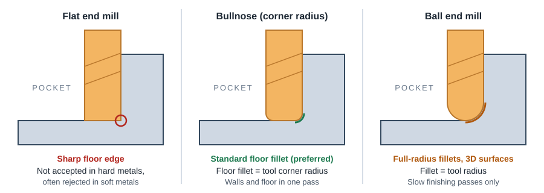

CNC Machining
Milling: 3-Axis, 3+2 and 5-Axis
Pick the simplest machine that can make the part. Every extra axis adds programming, fixturing and cost, so design for 3-axis first and only reach for 3+2 or full 5-axis when the geometry truly needs it.
The three ways to mill

| Method | What moves | Best for | Watch out for |
|---|---|---|---|
| 3-axis | Tool moves X, Y, Z. Tool axis always vertical. Part is flipped by hand for other faces. | Plates, brackets, housings, 2.5D pockets and holes square to the faces. | Each face the tool must reach is another setup. Angled holes and undercuts are not possible. |
| 3+2 (indexed 5-axis) | Two rotary axes tilt the part to a fixed angle and lock. Cutting is still 3-axis. | Angled holes and faces, several sides in one fixture, shorter tools on deep features. | Rotary table space limits part size. Some programming and fixture cost. |
| Continuous 5-axis | All five axes move together while the tool is cutting. | Swept and organic surfaces: impellers, blades, ports, implants, sculpted molds. | Highest programming and machine cost. Usually smaller work envelope. |
| Mill-turn | Lathe spindle plus milling head (often with B-axis). | Round parts with flats, cross holes and off-axis features done complete. | Most expensive machine hour. Worth it at volume or for complex round parts. |
Relative cost by process

Typical cost relative to 3-axis milling: CNC turning about 15% less, indexed 3+2 about 25% more, continuous 5-axis about 60% more, and 5-axis mill-turn about double.
If the part is round, turn it. If it can be cut from one or two directions, keep it 3-axis. If one or two features force extra setups, ask whether they can move, be re-oriented, or become a separate part.
Designing for 3-axis

- Work from as few faces as possible. A 2.5D part (profile, pockets and holes from the top) can often be made in one setup. See Setups & Part Orientation.
- Align every hole and pocket with a cardinal axis (X, Y or Z of the part). Holes that will be threaded must line up with a machining direction.
- Avoid undercuts unless they can be cut with a standard T-slot or keyseat cutter. See Undercuts.
- Give inside vertical corners a radius larger than the cutter radius. See Inside Corners & Pockets.
- Keep features shallow: deep, narrow features need long, slender tools that deflect and cut slowly. Plan on about 2 in (51 mm) maximum feature depth for standard tooling.
- Prefer flat floors and vertical walls. Sloped or curved surfaces need ball end mill passes, which add time.
Designing for 3+2 (indexed)
- Use it when a part has angled holes or faces, or features on four or five sides that would otherwise need many manual flips.
- Each angled feature should still be a simple prismatic feature once the part is tilted: flat face, straight hole, square pocket.
- Group angled features onto as few distinct angles as possible. Every new index angle is a new program section and inspection setup.
- Indexing lets the machine use a shorter, stiffer tool on deep features by tilting the part toward the spindle, which improves finish and accuracy.
- Many 5-axis machines cut from round bar or small blocks. One automated service lists roughly 2.6 x 2.9 x 3.9 in (66 x 74 x 99 mm) as its 5-axis part envelope.
Designing for continuous 5-axis
- Reserve it for swept and freeform surfaces that cannot be broken into flat faces: turbine blades, impellers, ports, ergonomic shapes.
- Large, gentle curvature lets the machine use a larger ball or bullnose tool and wider stepovers. Tight concave radii force small tools and long run times.
- Leave flat datum and clamping features (or extra stock to cut off later) so the part can be held and inspected.
- Specify surface finish only where needed. Fine scallop height on a freeform surface multiplies cycle time.
Fillets on every edge, variable draft and blended surfaces look nice in CAD but each one turns a fast 3-axis toolpath into a slow surface-finishing pass. Use them only where function needs them.
End mill types and what they leave

| Cutter | Used for | Design takeaway |
|---|---|---|
| Flat end mill | Roughing, profiles, vertical walls | Fastest for bulk removal. Leaves a sharp floor edge, which rapid services reject in hard metals and often in soft metals, so pockets are usually finished with a bullnose. Inside vertical corners: draw about 1.3 x tool R. See floor fillets. |
| Bullnose (corner radius) | Same as flat; preferred in hard metals (stainless, titanium) because the corner lasts longer | Floor fillet equals the tool corner radius. Use a standard radius such as 0.010, 0.020, 0.030 or 0.060 in. |
| Ball end mill | 3D contours, fillets, chamfers, sloped walls | Finishing only, many small passes. Large fillets and sloped faces add time. |
| Chamfer / spot / T-slot | Edge chamfers, hole spotting, undercut slots | A 45° chamfer is much faster than an edge fillet. |
Cutters are only stiff for a few diameters of length. Small tools are short and slow: a 1/32 in (0.8 mm) end mill typically reaches only about 5x its diameter. Larger corner radii and shallower features let the shop use bigger, faster tools.
Typical machine envelopes
Part size is limited by the machine travel, the stock the shop keeps on hand, and how the part is held. These are published figures from automated and network vendors and are useful as planning targets.
| Process / material | Max part size | Notes |
|---|---|---|
| Automated 3-axis, aluminum and most plastics | 10 x 7 x 3.75 in (254 x 178 x 95 mm) | Can be milled from all six orthogonal sides |
| Automated 3-axis, steels, stainless, titanium, brass | about 10 x 7 x 1.75 in deep | Depth varies by material, check the vendor chart |
| Automated large blocks (aluminum, some plastics) | up to 22 x 14 x 3.75 in (559 x 356 x 95 mm) | Top and bottom only, no side setups |
| Automated 5-axis | about 2.6 x 2.9 x 3.9 in | Cut from round bar stock |
| Network / job shop milling | up to about 80 x 48 x 24 in | Larger parts need manual review |
Envelopes change as vendors add equipment. Use the vendor's current material chart before committing a design to a size limit.
ProtoLabs CNC milling design guidelines · ProtoLabs: complex features on machined parts · Xometry CNC Machining Design Guide · ProtoLabs "15 Design Tips to Reduce the Cost of CNC Machining" (process cost comparison).